SysConfig¶
Overview¶
The SysConfig tool allows for intuitive and natural configuration of key application components via a Graphical User Interface (GUI).
SysConfig will generate source code to configure these components based on the settings in the SysConfig configuration file *.syscfg.
This generated code is then included in the application. The reliable and validated initialization software generated by SysConfig
can significantly speed up development and help designers avoid lengthy debug sessions.
Additionally, SysConfig can generate visualization diagrams and debug artifacts.
For example, the TI Driver modules interact with the device SDK to initialize on-Board hardware for use in an application. To do this, the TI Driver modules require certain C data structures to be filled in by the user in order to configure the hardware as needed. Instead of doing this manually, we can use SysConfig to create and fill in these structures based on our GUI inputs.
The following diagram shows how SysConfig and the generated sources tie into creating the application executable.
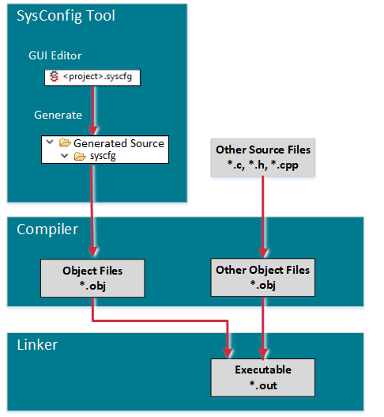SysConfig is not dependent on an RTOS, compiler toolchain, or IDE. It is available:
- with CCS Desktop
- with CCS Cloud
- as a stand-alone desktop tool
- as a command-line tool
In Code Composer Studio, clicking on a SysConfig configuration file will launch the SysConfig GUI.
Features¶
- Interactive and intuitive graphical tool for enabling, configuring and generating initialization code for pinmuxing, TI Drivers and stack configuration.
- Driver and stack configuration files are automatically generated, fully-commented at build time based on GUI inputs.
- Real-time code preview is available allowing developers to see what code is being generated based on GUI inputs.
- Real-time conflict management to ensure developers are creating a valid system configuration.
- Graphical pin configuration simplifies pin multiplexing settings (SysConfig provides features of PINMUX utility).
- Both board and device level views are available to visually show pin and peripheral configurations.
- Mouse overs, tool tips and visual cues guide you toward a valid configuration.
- Contextual documentation is embedded directly within the interface, and relevant documentation and definitions are exposed and linked within the tool.
- Supported families include: CC13xx, CC26xx, CC31xx, CC32xx, MSP432™ MCUs, Keystone™ 2 SoC, Sitara™ processors, DRAx, TDAx, TMS320F28x, mmWave, Tiva™ ARM® MCUs.
GUI¶
SysConfig provides different views which allows the user to configure components, determine what resources are available to them, and gain further insights into the workings of SysConfig and the relationship between the existing hardware and the software deployed. The UI consists of three Tabs and several toggle-able Views.
The left sidebar lets you navigate between the Software, Reserve Peripherals, and Hardware Tabs.
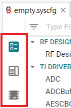The remaining Views are accessible through the icons on the top-right.
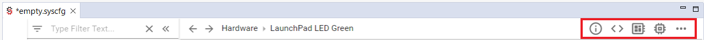Software Tab¶
In the Software Tab we are able to configure additional software for our board. By adding these additional configurations we will be changing the header files which will be generated by SysConfig as mentioned before. For example, if a user has a button or LED they would like to use they can first configure it by going to TI DRIVERS which will allow them to allocate software for the selected piece of hardware.
The left pane contains a list of software module such as drivers, middleware, and protocol stacks that can be configured in the SysConfig GUI. The right pane is where you can add an instance of a module and configure it.

Problems View¶
The Problems View will showcase any errors, warnings, and informational notes that pertain to the specific configuration setup.
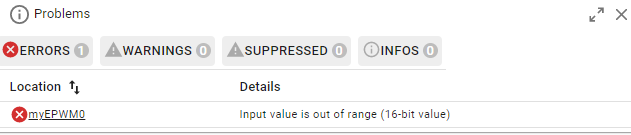Generated Files View¶
The Generated Files View allows the users to see exactly what files SysConfig will generate during the build which includes the header and C files previously mentioned. Through this the user can click on each file and see the code to be added and they can also choose whether or not include the file in the build by toggling Include in Build button.
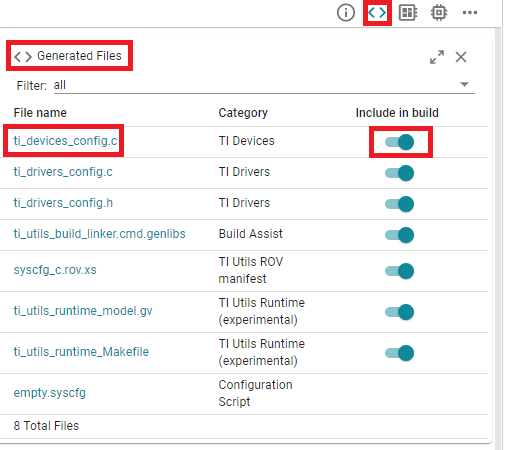 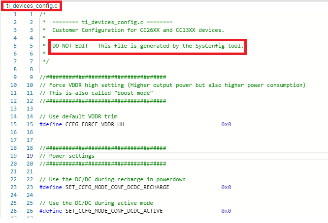SysConfig shows the diff of the generated files in real time so you can see how the GUI changes affect the generated code.
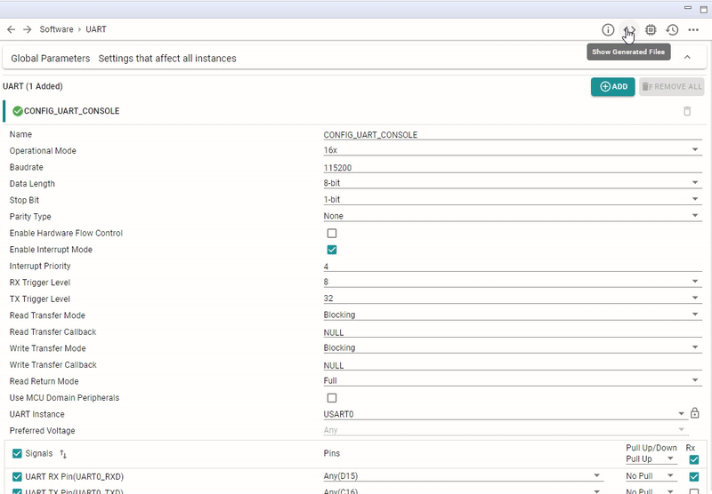Board and Device Views¶
The Board view allows the users to determine what pins are currently being used by the program and what pins are available. In the example below, the program deployed on the board is the empty project which flashes a single LED. In SysConfig we can see that only one pin DI06 is in use which corresponds to a red LED on the device. We are also able to see which pins are free and which are attatched to software. The Device View is quite similar to the Board View because it also illustrates what pins are available, assigned, which pins are power, ground, or just fixed.
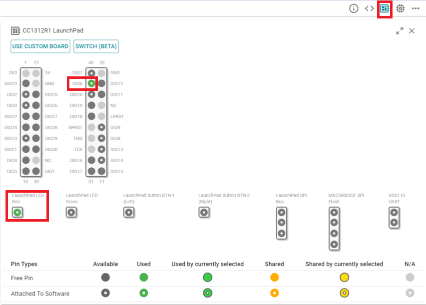 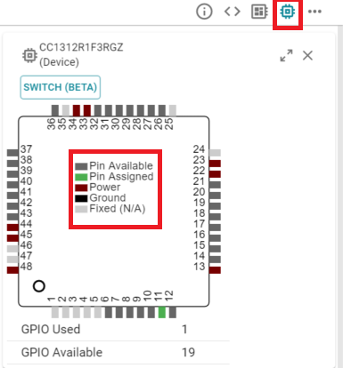Other Views¶
A few other less commonly used views are also available, including a History View which logs all of the changes done in the SysConfig GUI.
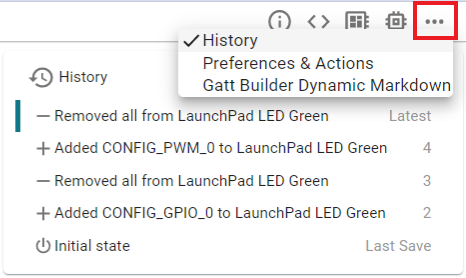Reserve Peripherals Tab¶
The Reserve Peripherals Tab lets you define hardware for which you will write your own code, rather than relying on SysConfig's code generation.
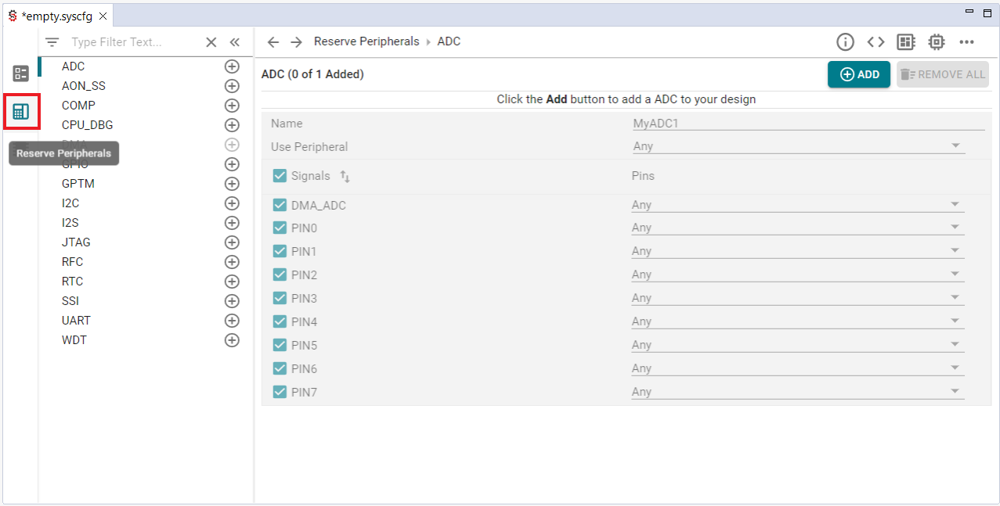Hardware Tab¶
The Hardware Tab is useful for identifying hardware which is readily available to use on your device. This may list different LEDs, buttons, SPI Flash memory, and UART ports. From this tab we can also program each individual piece of hardware with the Use Software button. This can be especially useful when you are unsure of what module to pick in the Software Tab to configure a particular piece of hardware.
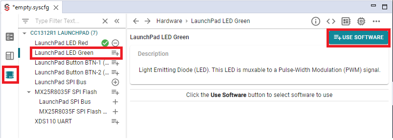 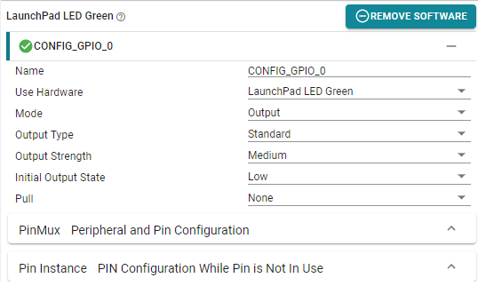More Info¶
For more specific information on SysConfig usage, check the SysConfig section in the documentation for your device on Resource Explorer.